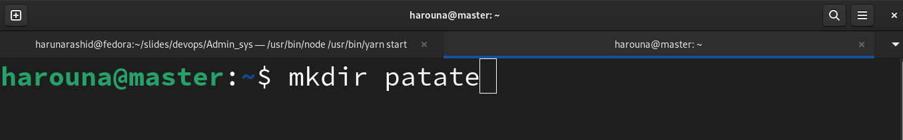
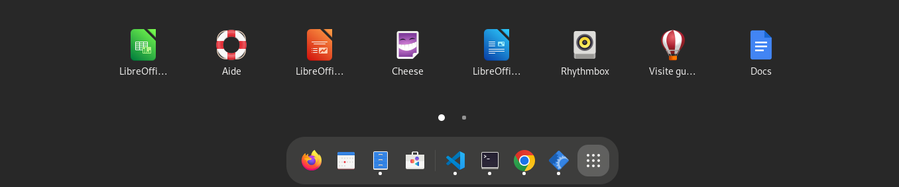

Module 1: Administration Système
Créé par Haruna Rashid Yakubu pour Worketyamo
Introduction
GNU/Linux est un système d’exploitation libre fonctionnant sur la base d’un noyau Linux, également appelé kernel Linux. Linux est une implémentation libre du système UNIX et respecte les spécifications POSIX. GNU/Linux est généralement distribué dans un ensemble cohérent de logiciels, assemblés autour du noyau Linux et prêt à être installé. Cet ensemble porte le nom de “Distribution”
Exemples de Distributions
- Debian qui sert de base pour la distribution ubuntu
- RedHat qui sert de base pour la distribution centOs
- Arch qui sert de base pour la distribution Manjaro
1.1- Qu’est-ce qu’un
système d’exploitation ?
Un système d’exploitation (OS) est un ensemble de programmes permettant la gestion des ressources disponibles d’un ordinateur. Parmi cette gestion des ressources, le système d’exploitation est amené à :
- Gérer la mémoire physique ou virtuelle.
- Intercepter les accès aux périphériques.
- Offrir aux applications une gestion correcte des tâches
- Protéger les fichiers contre tout accès non autorisé.
- Collecter les informations sur les programmes utilisés ou en cours d’utilisation
Différence entre CLI Et GUI
L'interface de ligne de commande (CLI) et l'interface graphique (GUI) sont deux façons différentes d'interagir avec un système d'exploitation.
CLI
La CLI est une interface texte qui utilise des commandes et des arguments pour contrôler le système. Les commandes sont généralement courtes et concises, et elles sont entrées en utilisant le clavier.
GUI
La GUI est une interface graphique qui utilise des menus, des boutons et des autres éléments visuels pour contrôler le système. Les utilisateurs interagissent avec la GUI en utilisant une souris ou un pavé tactile.
Les propriétés CSS
Il existe de nombreuses propriétés CSS qui permettent de contrôler l'apparence des éléments HTML. Voici quelques-unes des propriétés les plus courantes :
- Couleur
- Texte
- Police
- Mise en Forme
- Mise en Page
Différences entre CLI et GUI
Les valeurs CSS
Les valeurs CSS peuvent être de différents types, tels que des chaînes de caractères, des nombres, des couleurs ou des listes.